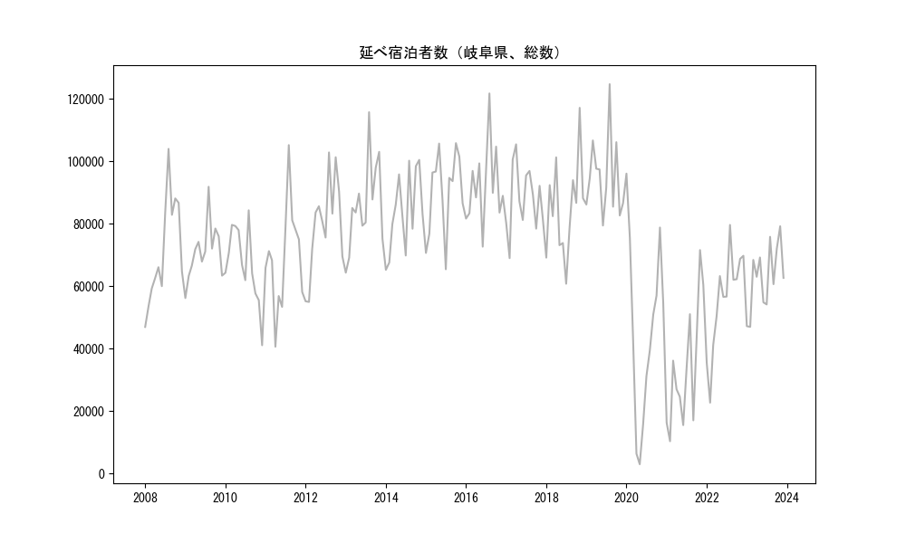
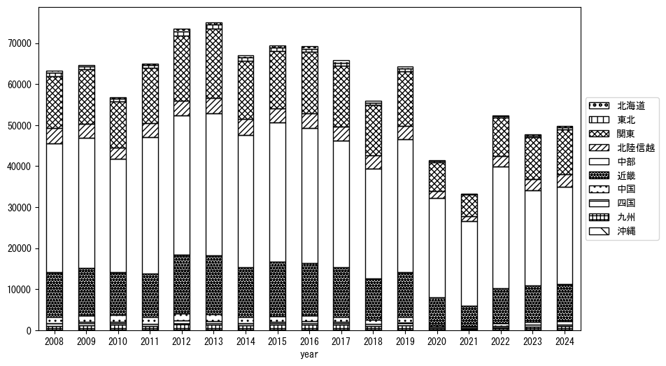
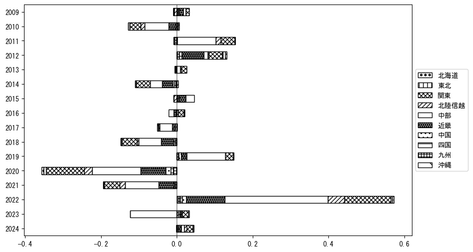
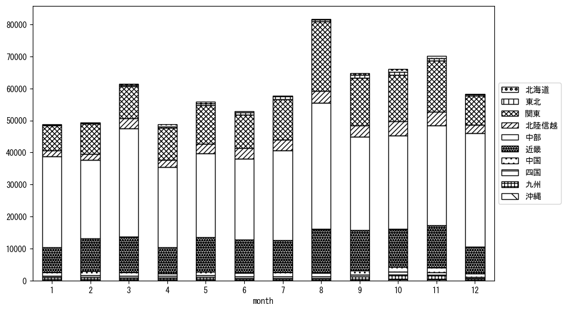
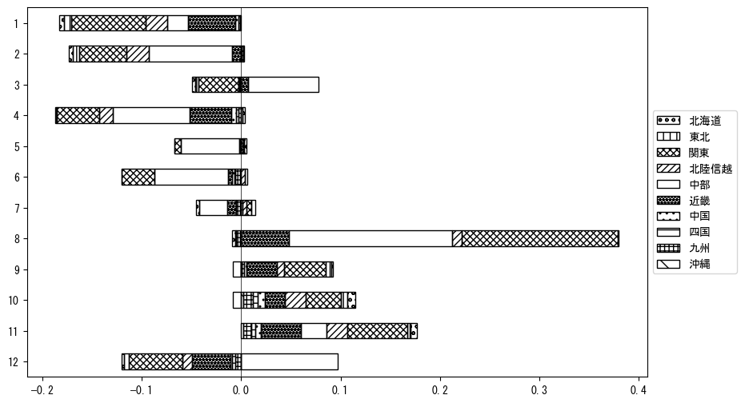

-
トップ
-
岐阜県
岐阜県
１．延べ宿泊者（総数）の推移
時系列グラフ

図１：岐阜県内の従業員数100人以上の宿泊施設での延べ宿泊者数（国外、居住地不詳を含む総数）。
基本統計量
表１：従業員数100人以上の宿泊施設での延べ宿泊者の総数（国外、および居住地不詳を含む）に関する基本統計量。単位は人泊。平均は１か月あたりの平均値を表す。図１に対応。
| 2008年 |
71,543 |
17,016 |
46,994 (1月) |
104,005 (8月) |
| 2009年 |
71,103 |
9,004 |
56,242 (1月) |
91,873 (8月) |
| 2010年 |
66,980 |
12,338 |
41,131 (12月) |
84,336 (8月) |
| 2011年 |
69,368 |
16,477 |
40,663 (4月) |
105,214 (8月) |
| 2012年 |
79,598 |
15,287 |
55,001 (2月) |
102,866 (8月) |
| 2013年 |
85,969 |
14,415 |
64,362 (1月) |
115,749 (8月) |
| 2014年 |
83,978 |
12,648 |
65,267 (1月) |
100,484 (11月) |
| 2015年 |
90,142 |
13,208 |
65,464 (7月) |
105,837 (10月) |
| 2016年 |
92,384 |
12,789 |
72,697 (6月) |
121,750 (8月) |
| 2017年 |
88,133 |
10,533 |
69,023 (2月) |
105,455 (4月) |
| 2018年 |
84,835 |
15,346 |
60,821 (7月) |
117,147 (11月) |
| 2019年 |
94,947 |
12,791 |
79,466 (6月) |
124,721 (8月) |
| 2020年 |
46,050 |
29,013 |
3,026 (5月) |
96,084 (1月) |
| 2021年 |
33,925 |
19,365 |
10,398 (2月) |
71,609 (11月) |
| 2022年 |
55,760 |
16,001 |
22,757 (2月) |
79,654 (8月) |
| 2023年 |
62,878 |
10,579 |
47,010 (2月) |
79,231 (11月) |
| 2024年 |
74,235 |
13,362 |
47,944 (1月) |
95,241 (8月) |
２．宿泊者数の重心（年平均の推移）
図２：岐阜県内の従業員数100人以上の宿泊施設での延べ宿泊者数（国外、居住地不詳を除く）の重心（年平均の推移）。
全画面表示
重心の前年平均からの移動距離と方位、および緯度・経度
表２：重心の前年平均からの移動距離と方位、および緯度・経度。図２に対応。
| 2008年 |
— |
— |
35.3620 |
137.0611 |
| 2009年 |
南南西 |
3.3km |
35.3365 |
137.0415 |
| 2010年 |
西南西 |
8.1km |
35.3075 |
136.9596 |
| 2011年 |
東北東 |
10.9km |
35.3501 |
137.0672 |
| 2012年 |
南西 |
1.0km |
35.3432 |
137.0602 |
| 2013年 |
東 |
4.4km |
35.3426 |
137.1083 |
| 2014年 |
北北東 |
4.9km |
35.3849 |
137.1231 |
| 2015年 |
南西 |
7.9km |
35.3396 |
137.0555 |
| 2016年 |
東北東 |
5.6km |
35.3563 |
137.1131 |
| 2017年 |
東南東 |
2.5km |
35.3459 |
137.1369 |
| 2018年 |
北北東 |
2.2km |
35.3643 |
137.1458 |
| 2019年 |
西南西 |
4.7km |
35.3489 |
137.0974 |
| 2020年 |
西南西 |
8.8km |
35.3076 |
137.0143 |
| 2021年 |
東 |
4.2km |
35.3057 |
137.0606 |
| 2022年 |
東北東 |
1.7km |
35.3118 |
137.0775 |
| 2023年 |
東北東 |
3.7km |
35.3270 |
137.1132 |
| 2024年 |
北東 |
4.0km |
35.3540 |
137.1421 |
運輸局別延べ宿泊者数
時系列（年平均）

図３：岐阜県内の従業員数100人以上の宿泊施設での１か月あたり平均延べ宿泊者数（国外、居住地不詳を除く）の運輸局別内訳。
寄与度（前年からの変化率に対する）

図４：岐阜県内の従業員数100人以上の宿泊施設での運輸局別延べ宿泊者数（国外、居住地不詳を除く）から求めた寄与度。
３．宿泊者数の重心（月別）
図５：岐阜県内の従業員数100人以上の宿泊施設での延べ宿泊者数（国外、居住地不詳を除く）の重心（月別）。観測期間は2008年1月から2024年12月まで。
全画面表示
全期間（2008年1月～2024年12月）の平均と月別平均の比較
表３：全期間の平均から月別平均までの移動距離と方位、および緯度・経度。図５に対応。
| 全期間 |
— |
— |
35.3405 |
137.0810 |
| 1月 |
南西 |
19.5km |
35.2360 |
136.9084 |
| 2月 |
南西 |
18.4km |
35.2367 |
136.9238 |
| 3月 |
西南西 |
11.5km |
35.3003 |
136.9649 |
| 4月 |
北北東 |
3.9km |
35.3744 |
137.0905 |
| 5月 |
北東 |
3.3km |
35.3638 |
137.1028 |
| 6月 |
北北東 |
5.4km |
35.3874 |
137.0979 |
| 7月 |
東北東 |
9.0km |
35.3761 |
137.1702 |
| 8月 |
東 |
24.0km |
35.3503 |
137.3442 |
| 9月 |
東北東 |
8.5km |
35.3705 |
137.1673 |
| 10月 |
北 |
6.8km |
35.4013 |
137.0877 |
| 11月 |
北東 |
5.1km |
35.3783 |
137.1126 |
| 12月 |
西南西 |
7.9km |
35.3103 |
137.0018 |
運輸局別延べ宿泊者数
月別平均（2008年1月～2024年12月）

図６：岐阜県内の従業員数100人以上の宿泊施設での延べ宿泊者数（国外、居住地不詳を除く）の運輸局別内訳（月別）。
寄与度（全期間の平均から月別平均への変化率に対する）

図７：岐阜県内の従業員数100人以上の宿泊施設での運輸局別延べ宿泊者数（国外、居住地不詳を除く）から求めた寄与度（月別）。
４．データのダウンロード
出典：観光庁「宿泊旅行統計調査」に収録された「施設所在地、居住地別延べ宿泊者数（従業員数100人以上の施設）」
国土地理院「白地図（地理院タイル）」（図２と図５）